简介
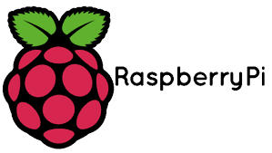
一个以微信为终端的好玩的小东西
可以实现的功能
可以实现以手机微信端对树莓派终端进行实时监控、摄像头云台操纵、闯入报警、温度检测、灯光控制、自动光线控制等功能
设备图片
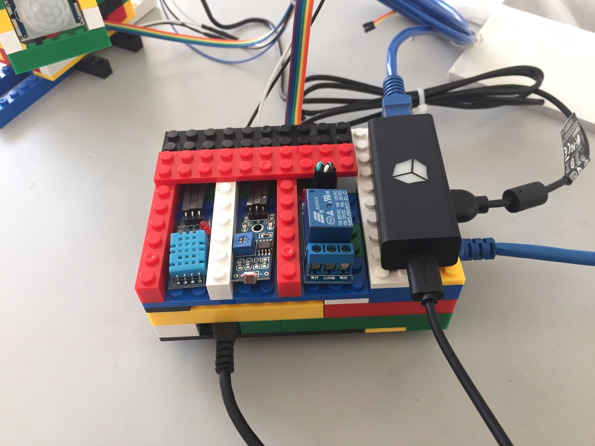 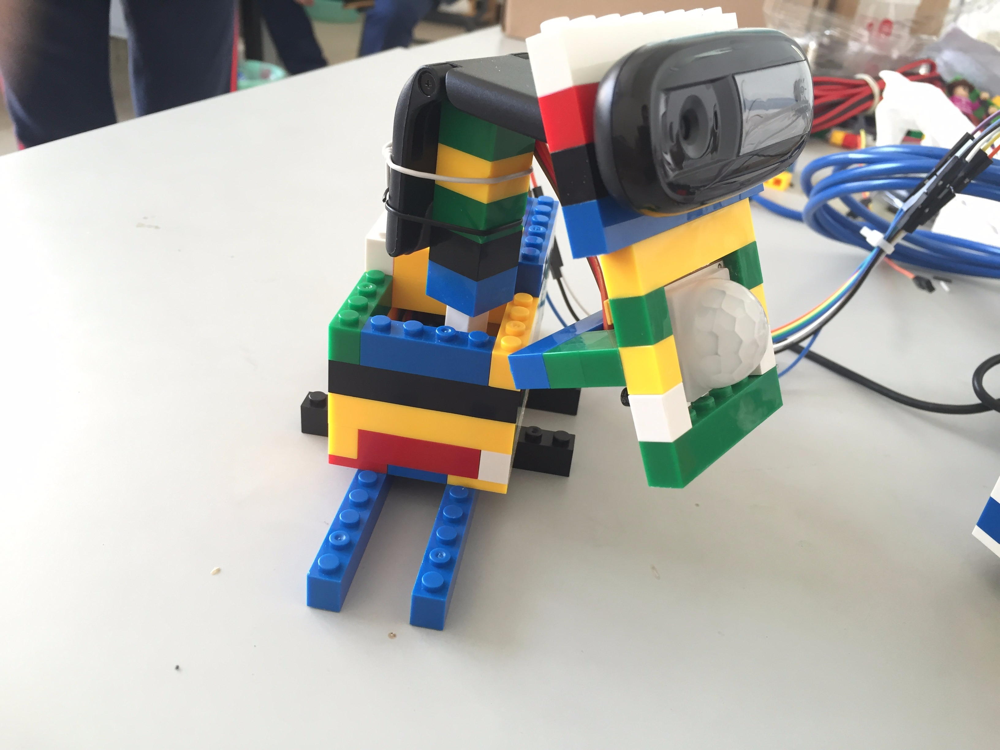 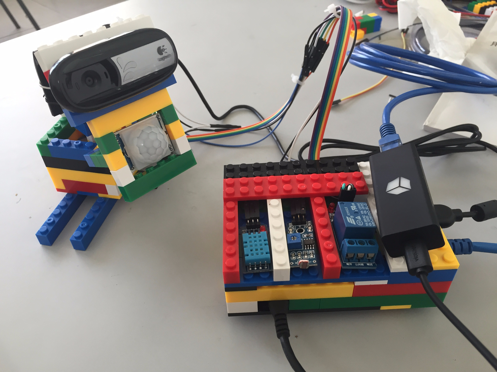
运行截图
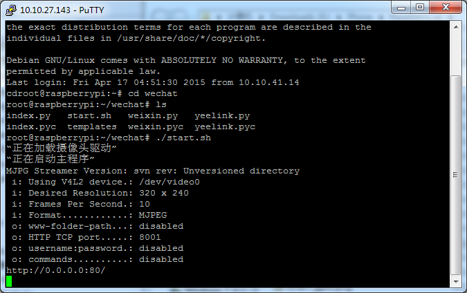 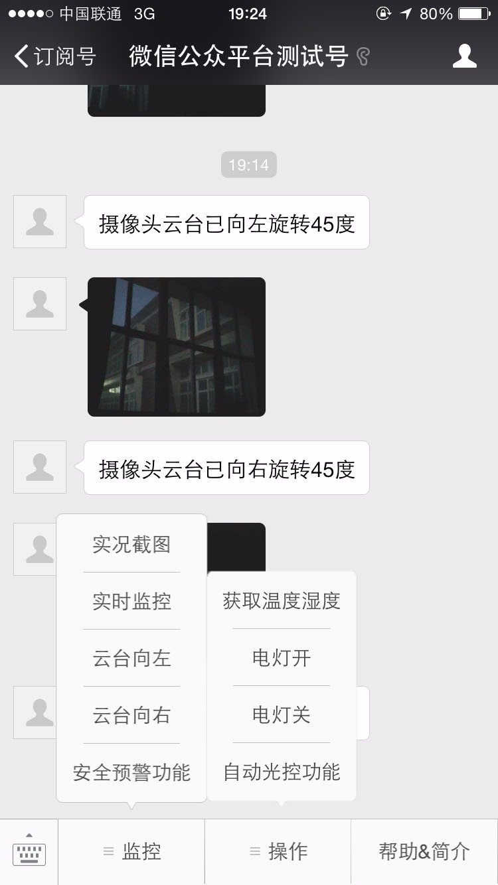 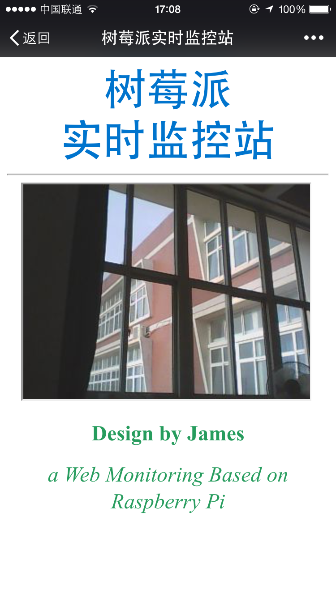
需要用到的所有硬件
- 路由器
- 树莓派主板
- 树莓派电源（5V 2A）
- 至少 8g tf卡 （推荐class 10，8g足矣）
- 支持ouv的摄像头（罗技C170）
- 花生棒及电源（或用花生壳内网版代替）
- 乐高积木（小颗粒）
- 两根网线
- 温度传感器（DHT11）
- 光线传感器（光敏电阻模块）
- 人体红外传感器（HC-SR501）
- 继电器（5V低电平触发）
- 步进电机（28BYJ-48-5V）
- 步进电机驱动板（UL2003型）
- GPIO连接线若干
需要安装的所有软件
Windows端
- Putty（0.63）
- WinSCP（5.1.7）
- Win32DiskImager（0.9.5）
- Notepad++
Raspberry Pi端
-
RASPBIAN 系统
- 下载链接：https://www.raspberrypi.org/downloads/
-
webpy
-
python-lxml
-
python-memcache
-
apache2
-
mjpg-streamer
-
RPI.GPIO
-
此程序的全部源码
- 源码地址： https://github.com/329703622/wechatpi
配置过程
初始化树莓派
使用Putty登陆树莓派
Username：pi
Password：raspberry
获取root权限
sudo passwd root
（需要输入两次你想设置的root密码）
sudo passwd --unlock root
设置完成后重启Putty，以root身份登陆
释放空间及设置时区
以root身份登录后会自动弹出raspi-config设置工具，也可直接输入raspi-config调出
1. 执行第一项，一直选择ok即可
2. 选择第四项，然后选择第二项，进入时区设置
3. 分别选择Asia——Shanghai，确定，即可改为+8时区
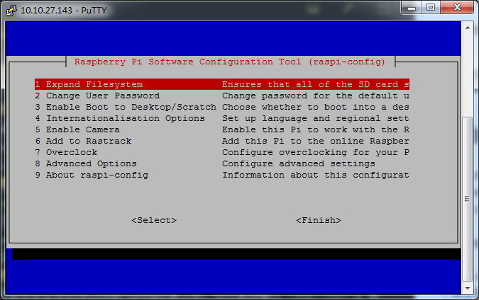 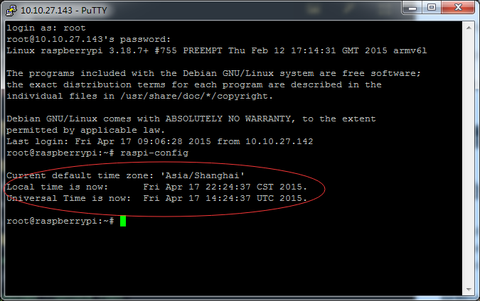
设置静态ip
sudo nano /etc/network/interfaces
把这一行
iface eth0 inet dhcp
替换为
iface eth0 inet static
address 192.168.1.101
netmask 255.255.255.0
gateway 192.168.1.1
dns-nameservers 114.114.114.114
修改resolv.config文件
sudo nano /etc/resolv.conf
修改为
nameserver 114.114.114.114
否则不能解析域名
更新软件源
nano /etc/apt/sources.list
删除原文件所有内容，用以下内容取代：
deb http://mirror.sysu.edu.cn/raspbian/raspbian/ wheezy main contrib non-free
deb-src http://mirror.sysu.edu.cn/raspbian/raspbian/ wheezy main contrib non-free
Ps：树莓派官方提供的软件源列表 http://www.raspbian.org/RaspbianMirrors Ps2：国内的几个软件源
中山大学 http://mirror.sysu.edu.cn/raspbian/raspbian/
中国科学技术大学 http://mirrors.ustc.edu.cn/raspbian/raspbian/
清华大学 http://mirrors.tuna.tsinghua.edu.cn/raspbian/raspbian/
华中科技大学 http://mirrors.hustunique.com/raspbian/raspbian/
大连东软信息学院源（北方用户） http://mirrors.neusoft.edu.cn/raspbian/raspbian/
重庆大学源（中西部用户） http://mirrors.cqu.edu.cn/Raspbian/raspbian/
- 更新缓存并升级软件
sudo apt-get update && apt-get upgrade
安装及配置
安装所需要的所有软件，将必须的软件包安装完毕，并且调试成功 调试过程如果有问题可以参见本博客（附录）中的其他文章，或欢迎留言讨论
安装软件
- webpy
git clone git://github.com/webpy/webpy.git
ln -s `pwd`/webpy/web
cd /root/webpy
sudo python setup.py install
- RPI.GPIO （安装RPI.GPIO 首先需要安装RPi.GPIO所需的Python Development Toolkit）
sudo apt-get install python-dev
sudo apt-get install python-pip
sudo pip install rpi.gpio
- python-lxml
sudo apt-get install python-lxml
- python-memcache
sudo apt-get install python-memcache
- apache2
sudo apt-get install apache2
- mjpg-streamer （安装mjpg-streamer 首先需要安装一下几个依赖包）
依赖包：
sudo apt-get install subversion
sudo apt-get install libv4l-dev
sudo apt-get install libjpeg8-dev
sudo apt-get install imagemagick
（编译安装mjpg-steamer）
wget http://sourceforge.net/code-snapshots/svn/m/mj/mjpg-streamer/code/mjpg-streamer-code-182.zip
unzip mjpg-streamer-code-182.zip
cd mjpg-streamer-code-182/mjpg-streamer
make USE_LIBV4L2=true clean all
make DESTDIR=/usr install
配置路由器
在路由器设置界面内，为树莓派设置好静态ip，或者在树莓派端设置静态ip，记住此ip
配置花生棒（或花生壳内网版）
如果网络环境拥有公网ip，则可以在路由器上设置ddns（ddns可以搜索其他相关文章），如果不具备此环境，则需要花生壳内网版（软件）或花生棒（硬件）来实现公网地址从而与微信公众平台对接。 首先申请一个花生壳域名，然后登陆花生棒管理端页面（http://hsk.oray.com/bang/） 选择内网映射添加映射，填入树莓派静态ip，将树莓派的80端口映射到域名上，并且勾选使用外网80端口（非常重要，否则无法完成对接） 申请另外一个花生壳域名，将此域名映射为树莓派的8080端口，依然勾选使用外网80端口
Ps：关于花生壳内网版的获取，可以在 http://www.oray.com/activity/140902/?icn=oray_140902&ici=hsk_home-grid 中缴纳一元认证费开通免费级服务 花生壳内网版的设置与花生棒大同小异，需要注意的是需要如果使用花生壳内网版则在工作前需要确认花生壳内网版正常工作并能正常解析
配置apache2
因为我的80端口需要被微信公众平台占用，所以我不能让网页走80端口，需要更改端口
nano /etc/apache2/ports.conf
将Listen 80改为Listen 8080
调试摄像头
运行考入树莓派中的Git包目录中testcam文件夹中的“stream.sh”文件：
sudo chmod +x stream.sh（先编译脚本文件，才能用./filename 来运行）
sudo ./stream.sh
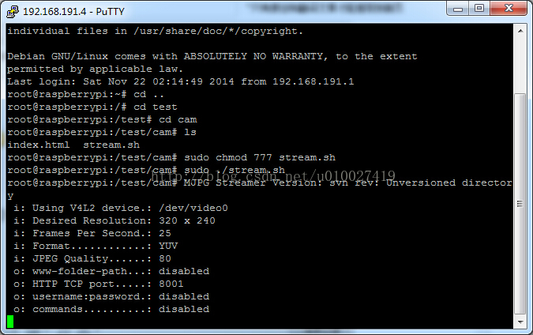
在运行程序时，如果发生错误，可能是之前由于运行过，进程仍然在工作，导致没法再运行，可以先运行ps -A，查看运行中的进程和进程ID号，再使用“kill id号”杀掉进程
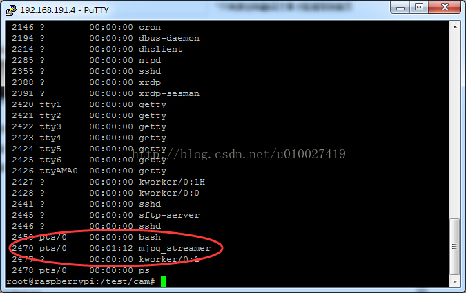
在pc上运行Git包中的“testcam.html”文件，右击编辑index.html，将树莓派ip换成你的树莓派固定ip，保存，双击打开testcam.html
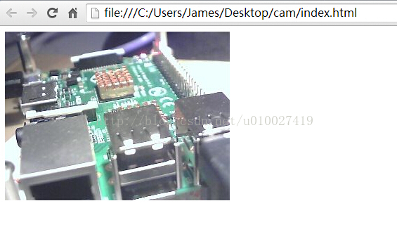
看到摄像头输出图像，说明摄像头工作正常。
申请及配置公众平台测试账号
- 打开页面 http://mp.weixin.qq.com/wiki/home/index.html 申请一个公共平台的测试账号
- 在左侧选择 测试号申请|在线调试选择接口测试号申请
- 申请成功后，进入管理界面
- 在接口配置信息的URL处输入你在花生壳申请的域名，后面加上
/weixinToken中填上你自己喜欢的一串字母，完成后不要点击提交 （此时可以先下载我之前的微信公众平台基础模板进行对接，可以对接成功后在进行接下来的工作，以测试网络环境是否配置完毕 文章地址：http://blog.csdn.net/u010027419/article/details/40835963）
下载及配置主程序
- 在此Github中下载完整代码包，解压后进行编辑 （Git：https://github.com/329703622/wechatpi）
- 填入刚才自己设置的的Token以及测试号提供的appID和appsecret（yeekey稍后提到）
- 填入自己的所有传感器对应的GPIO接口 （传感器调试参考此博客（或附录）其他文章）
- 设置完毕之后使用WinSCP放入树莓派文件目录
- 使用Putty登录树莓派
- 在刚在文件所在目录执行
chmod +x start.sh更改文件权限 - 执行
./start.sh -
如果出现如图所示信息，则程序正确运行
-
此时在微信公众平台测试账号的网页上点击提交，如果提示成功，则整套系统基本配置成功
部署web页面
- 编辑Git包中的文件中的index.html，在你的树莓派ip处改为树莓派的ip地址
- 将index.html上传到
/var/www目录下了，替换之前的index.html - 在浏览器中输入
http://你的树莓派局域网ip:8080/尝试一下能否访问 如果成功出现页面，则web页面部署成功
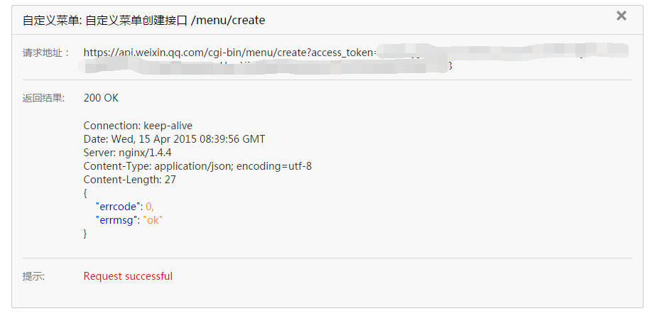
设置微信公众账号菜单
- 在微信公众平台管理测试账号下方选择获取access token
- 在左侧菜单选择 基础接口 获取access token
- 在右侧最下方选择 使用网页调试工具调试该接口
- 首先获得access token 在appid和secret中填上之前管理测试账号页面提供的数据，点击检查问题
- 下方蓝色的access_token就是一会提交菜单要用到的access_token，复制此token
- 分别在接口类型选择自定义菜单和在接口列表选择自定义菜单创建接口。进入如下界面，填入刚才的access_token（access_token具有一定的时效性，时间过长后需重新获取）
- 在body中填入Git包中的menu.txt内的内容，点击检查问题
- 若显示Request successful即为菜单创建成功。
Ps：取消关注微信号重新关注即可直接查看效果。否则受限于微信限制，需要24小时后缓存刷新方可查看。 Ps2：参数说明 |参数 |是否必须 |说明| | ------------- |:-------------:|:-----| |button |是| 一级菜单数组，个数应为1~3个| |sub_button| 否 |二级菜单数组，个数应为1~5个| |type |是| 菜单的响应动作类型| |name |是| 菜单标题，不超过16个字节，子菜单不超过40个字节| |key| click等点击类型必须| 菜单KEY值，用于消息接口推送，不超过128字节| |url |view类型必须| 网页链接，用户点击菜单可打开链接，不超过256字节|
申请Yeelink物联网服务
- 打开 http://www.yeelink.net/ 注册账号
- 登陆后在管理首页上，您的API Key 即为yeekey
- 添加一个新设备
- 添加完毕后记住自己的设备ID
- 在程序中填入自己的设备id以及yeekey，并将附近
自己的yeelink页面改为自己的页面
结尾&心得
- 接触了Python，一门非常棒的语言
- 学会了MarkDown写博客，太方便了
- 玩了树莓派
- 过了买东西剁手的瘾
- 无聊了有事情干
附录
python的微信公众平台基础代码 https://github.com/329703622/raspchat
传感器单独调试代码 https://github.com/329703622/Sensor
树莓派，玩转微信公共平台--初级篇 http://tieba.baidu.com/p/3232803694?qq-pf-to=pcqq.discussion
树莓派，玩转微信公共平台--中级篇 http://tieba.baidu.com/p/3477722264
使用树莓派与微信公众平台对接(python) http://blog.csdn.net/u010027419/article/details/40835963
微信公众平台按钮及菜单创建 http://blog.csdn.net/u010027419/article/details/40949065
树莓派的摄像头与监控相关 http://blog.csdn.net/u010027419/article/details/41123709
树莓派通过GPIO控制步进电机(python) http://blog.csdn.net/u010027419/article/details/41518321
树莓派连接dht11温度传感器获取温度(python) http://blog.csdn.net/u010027419/article/details/41722261
树莓派架设http服务器挂载网页 http://blog.csdn.net/u010027419/article/details/42343057
html网页兼容手机浏览器（解决显示页面很小的问题） http://blog.csdn.net/u010027419/article/details/44857827
Disqus 留言
comments powered by Disqus